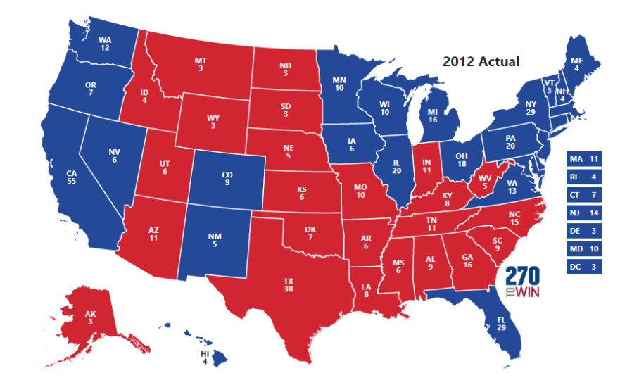

I was taught the importance of rights and freedom for all people from a young age. My actions throughout the years prove this trait I have. The reason I joined politics was because I wanted to be able to fight for all citizen’s rights. I began my law career in the office of the district attorney of Alameda County and specialized in child assault cases where I fought for their rights, bringing justice and long-term benefits to these kids. In 2004, when I was elected District Attorney of San Francisco, I was a national leader in the movement for LGBTQ+ rights. In 2010, I was elected Attorney General of California where I oversaw the largest state justice department in the country, defending the Affordable Care Act and enforcing environmental laws, bringing long-term success for the protection of our homes. In 2017, I was elected to the US Senate where I helped create and pass many bipartisan legislations, bringing long-term change for a future of equality. And in 2021, I was elected to the Vice President, where I continue to bring about long-lasting change and fight for your rights.
Beliefs I have
Every woman in every state must have reproductive freedom and access to the health care they need. That is why I have fought to lower health care costs and protect the ability of every woman to make her own decisions about her own body. Today, our Administration is proposing the largest expansion of contraception coverage in more than a decade, which will build on our Administration’s work to protect reproductive freedom by providing millions of women with more options for the affordable contraception they need and deserve. I stand with the majority of Americans – no matter their political party – who support access to contraception and abortion. We will continue to call on Congress to pass federal legislation that restores reproductive freedom nationwide.
After decades of offshoring, manufacturing is returning across America, from major cities to rural counties, creating good-paying jobs, including union jobs and jobs for those without college degrees. As vice president, I have helped create more than 1.6 million manufacturing and construction jobs, and American workers are rebuilding roads and bridges using materials made in America. As president, I will continue to help America build the industries of the future while creating high-quality union jobs in the electric vehicle and battery supply chains. I will also fight for unions, because I know that unions are the backbone of the middle class. I will fight to raise the minimum wage, end sub-minimum wages for tipped workers and people with disabilities, establish paid family and medical leave, and eliminate taxes on tips for service and hospitality workers.
Why we support Kamala Harris
As proud members of NARAL, an organization dedicated to preserving and protecting woman’s fundamental human and reproductive rights, we fully support Kamala Harris for president of the United States. Kamala Harris made her message clear that if she is elected as president, every woman in America will be granted these vital abortion and birth control rights. For this reason, we believe she is the best candidate to win this election for our rights.
